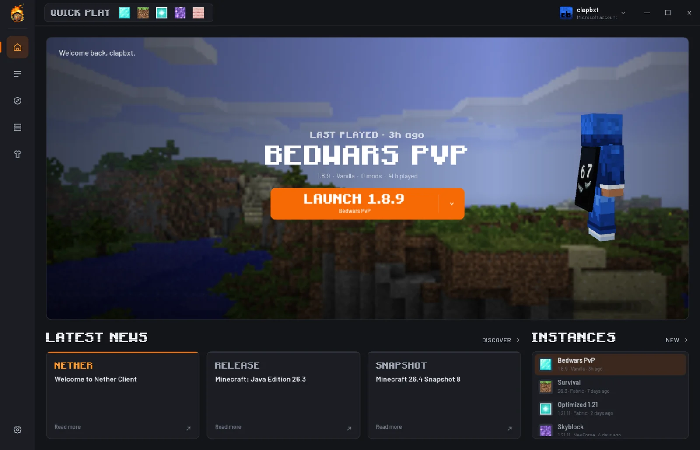
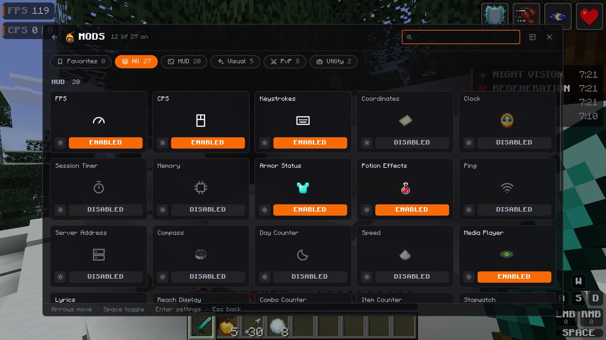
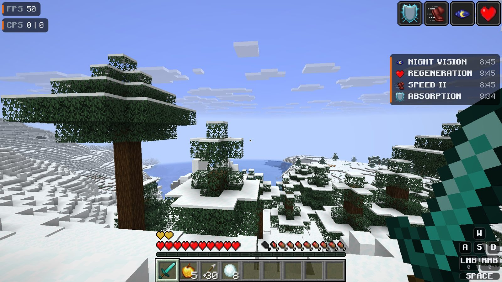
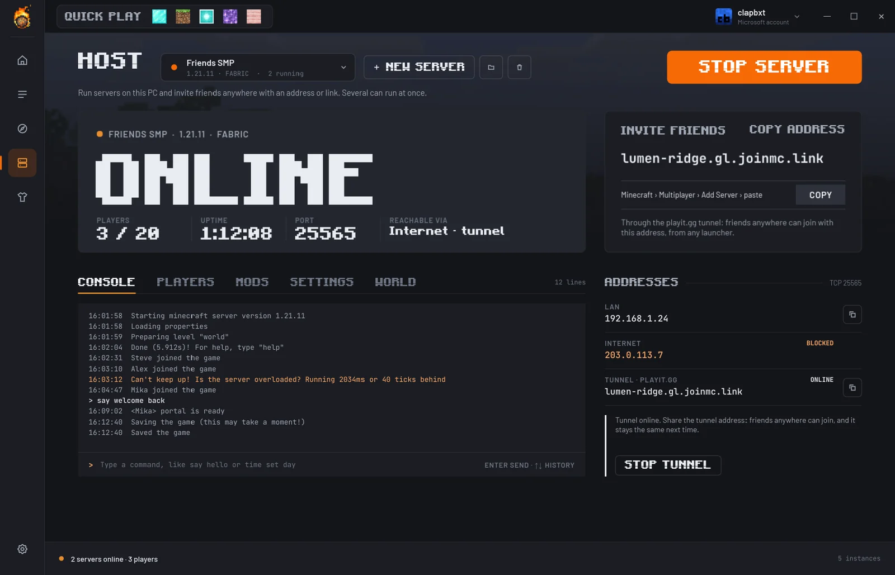
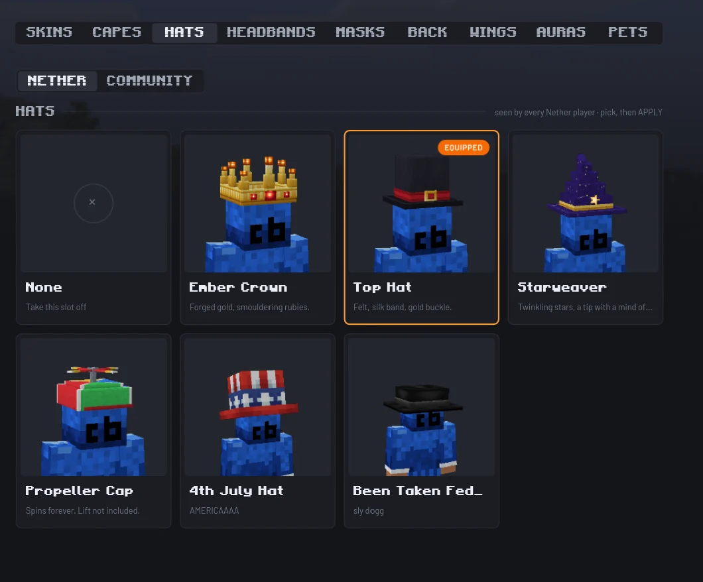
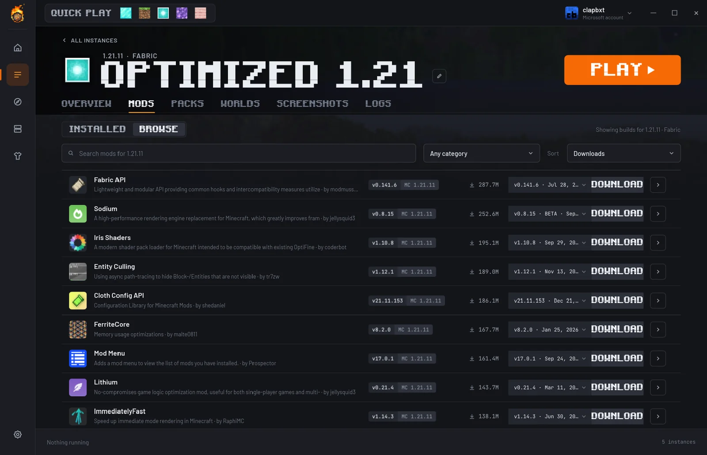
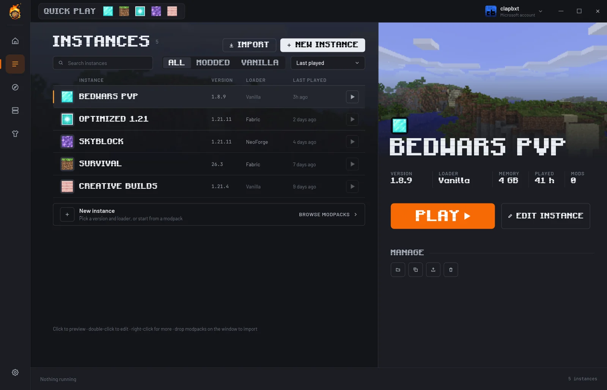

1.8.9 TO 26.X 100% FREE
ONE CLIENT.
EVERY VERSION.
A fast, native launcher with a built-in client for every Minecraft version. 33 in-game modules, a HUD you design, and servers for friends in one click.


33 MODULES, ONE KEY

A HUD YOU DESIGN

HOST FOR FRIENDS

CAPES AND COSMETICS

MODS IN ONE CLICK
01 LAUNCHER
EVERY VERSION, EVERY LOADER
Native and written in Rust, with no web view. It opens quickly, stays small and gets out of the way while you play.
- Vanilla, Fabric, Forge, NeoForge and Quilt, from 1.8.9 to 26.x. The right Java downloads by itself.
- Mods and modpacks from Modrinth in one click, filtered to your instance.
- Updates take a snapshot first, so you can always undo them.
- A pre-launch check and plain-English crash help with one-click fixes.
- Imports .mrpack, CurseForge zips, Prism and MultiMC instances.

02 IN-GAME CLIENT
BUILT IN. NO MOD NEEDED.
Press Right Shift in any version and the whole client is there: HUD, PvP tools, comfort and media.
- FPS with lows, CPS, keystrokes, armor, potions, coordinates, waypoints, zoom and more.
- Drag, snap, anchor, multi-select and undo. Every element gets its own colours and scale.
- Profiles save whole layouts and share as a code.
- A media player for Spotify or your browser, with synced lyrics.
- Sodium, Iris and Distant Horizons run untouched. Nether never patches the renderer.
03 HOST
YOUR SERVER, NO PORT FORWARDING
Start a server for friends in a few clicks and send them one address.
- Vanilla, Fabric or Paper. Run several at once.
- Plugins and mods from Modrinth.
- Opens the port by itself, or gives you a free tunnel address when your router won't.
- Friends join from any launcher: Multiplayer, Add Server, paste.
04 WARDROBE
LOOK THE PART, FOR FREE
Skins, capes and cosmetics that every Nether player sees. Nothing is locked behind a store.
- A skin library with a live 3D preview. Import any skin by username.
- Your Minecraft capes, plus Nether capes.
- Hats, masks, wings, auras and pets.
- Share your own capes and cosmetics with the community.
05 TRUST
FAIR, PRIVATE, OPEN
MICROSOFT SIGN-IN ONLY
Your login token goes to Microsoft and Mojang, never to us. It is kept in Windows Credential Manager.
NO TELEMETRY
No tracking, no ads, and nothing basic behind a paywall.
SIGNED UPDATES
Every release is signed and checked before it installs. Updates install themselves.
FAIR ON SERVERS
No ESP, no automation, nothing that reads data the server didn't send you.
OPEN SOURCE
MIT licensed. Read every line on GitHub.
NATIVE RUST
No Electron. Low memory, quick start, and more of your PC left for the game.
06 GET STARTED
PLAYING IN A MINUTE
- 1
DOWNLOAD
Get the setup for Windows .
- 2
INSTALL
Run it. No admin rights needed, and your Start menu gets a shortcut.
- 3
PLAY
Sign in with the Microsoft account that owns Minecraft, pick a version and press Play.
07 CHANGELOG
WHAT'S NEW
Release notes live on GitHub.
08 FAQ
QUESTIONS
Is Nether free?
Yes. The launcher, the in-game client, hosting, capes and cosmetics are all free. There are no ads and nothing basic is paywalled.
Will I get banned on servers?
Nether has no ESP, no automation and nothing that reads data the server didn't send you. Some servers still restrict things like toggle sprint or zoom, so those modules are marked "check rules" in the menu. Details are in SAFETY.md.
Which versions and loaders work?
Minecraft Java 1.8.9 to 26.x with Vanilla, Fabric, Forge, NeoForge or Quilt. Each instance is isolated and gets the right Java automatically.
Does it work with Sodium, Iris and my other mods?
Yes. Nether draws its client on top of the finished frame and never patches the renderer, so Sodium, Iris and Distant Horizons work untouched.
Windows says "Windows protected your PC". Is it safe?
SmartScreen warns about new apps that don't yet carry a paid code-signing certificate. Click More info, then Run anyway. Every release is signed with our own key and checked before it installs, and the full source is on GitHub.
Do I need to own Minecraft?
Yes. You sign in with the Microsoft account that owns Minecraft: Java Edition. Your sign-in goes to Microsoft and Mojang only.
Mac or Linux?
Nether runs on Windows 10 and 11 for now.
How do updates work?
The launcher checks for a new release when it starts, downloads it, verifies its signature and installs it in one click. Your instances, worlds and settings stay where they are.